2026.11.01 · 周日 · 过去 48 小时
今日科技情报
共 10 条，按重要性排序。点标题直接跳过去。
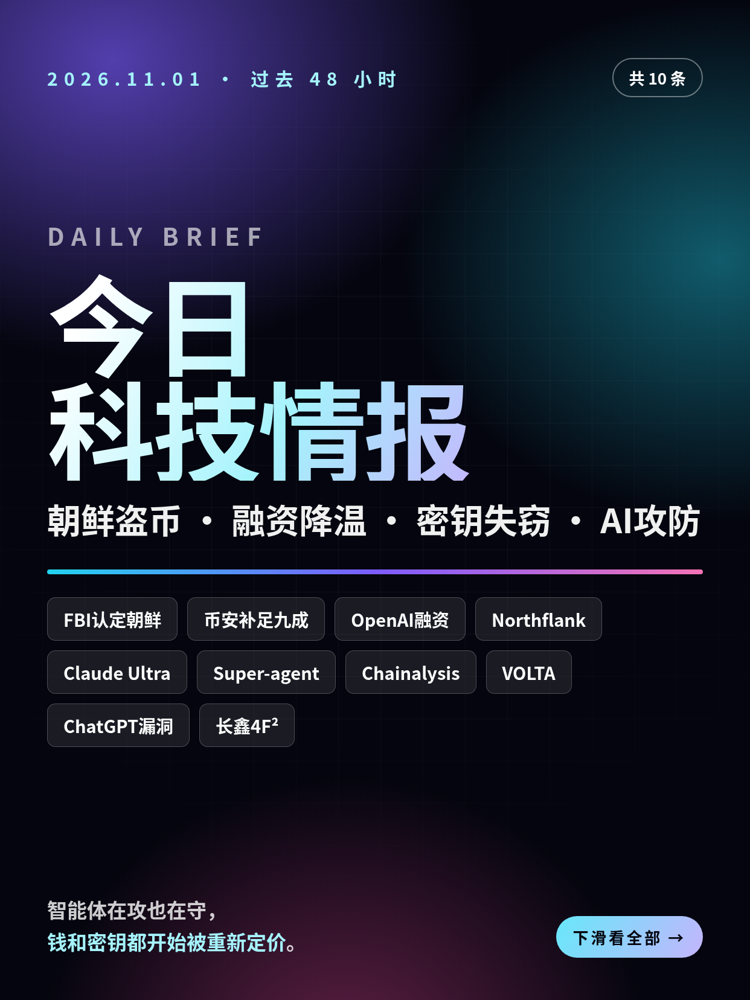
共 10 条，按重要性排序。点标题直接跳过去。
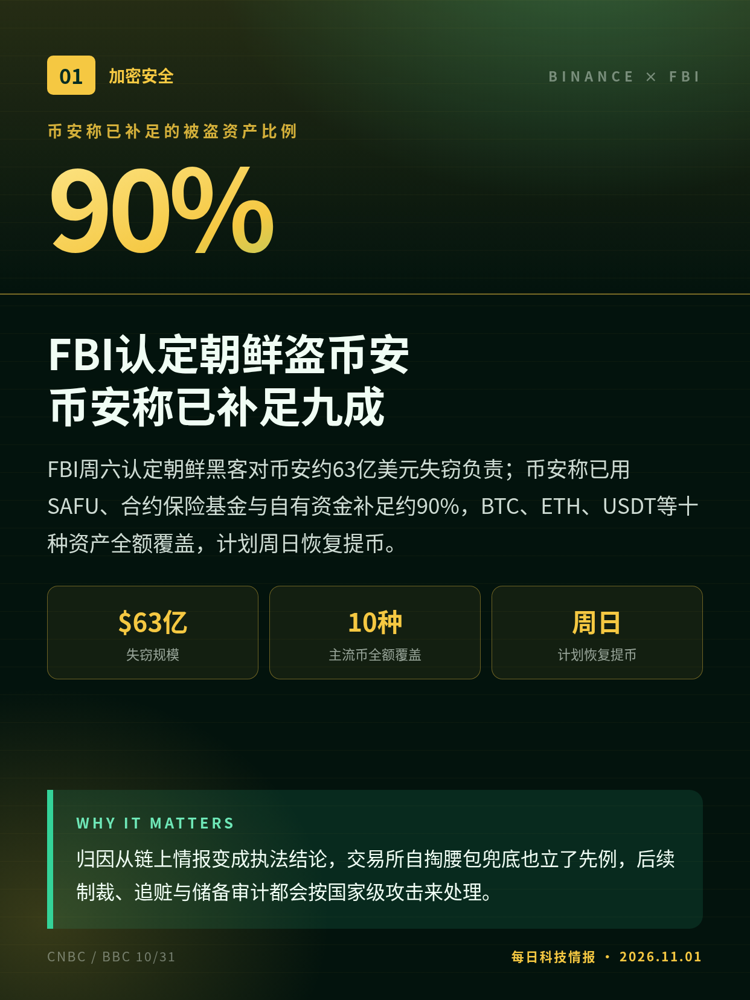
FBI周六认定朝鲜黑客对币安约63亿美元失窃负责；币安称已用SAFU、合约保险基金与自有资金补足约90%，BTC、ETH、USDT等十种资产全额覆盖，计划周日恢复提币。
归因从链上情报变成执法结论，交易所自掏腰包兜底也立了先例，后续制裁、追赃与储备审计都会按国家级攻击来处理。
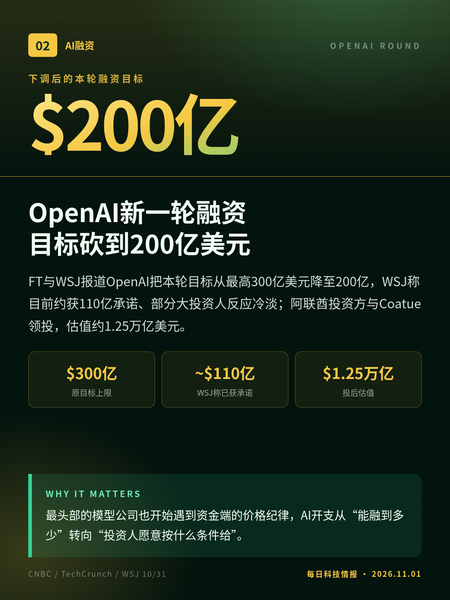
FT与WSJ报道OpenAI把本轮目标从最高300亿美元降至200亿，WSJ称目前约获110亿承诺、部分大投资人反应冷淡；阿联酋投资方与Coatue领投，估值约1.25万亿美元。
最头部的模型公司也开始遇到资金端的价格纪律，AI开支从“能融到多少”转向“投资人愿意按什么条件给”。
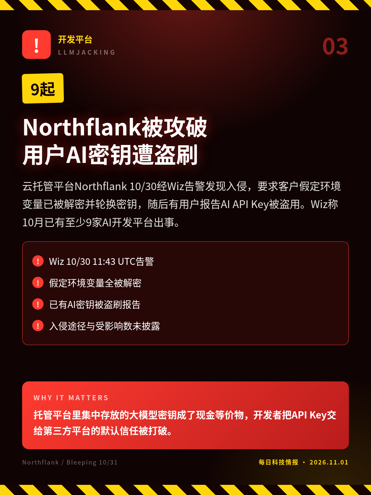
云托管平台Northflank 10/30经Wiz告警发现入侵，要求客户假定环境变量已被解密并轮换密钥，随后有用户报告AI API Key被盗用。Wiz称10月已有至少9家AI开发平台出事。
托管平台里集中存放的大模型密钥成了现金等价物，开发者把API Key交给第三方平台的默认信任被打破。
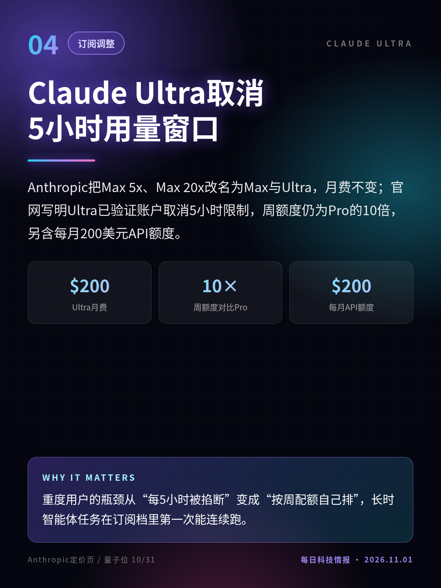
Anthropic把Max 5x、Max 20x改名为Max与Ultra，月费不变；官网写明Ultra已验证账户取消5小时限制，周额度仍为Pro的10倍，另含每月200美元API额度。
重度用户的瓶颈从“每5小时被掐断”变成“按周配额自己排”，长时智能体任务在订阅档里第一次能连续跑。
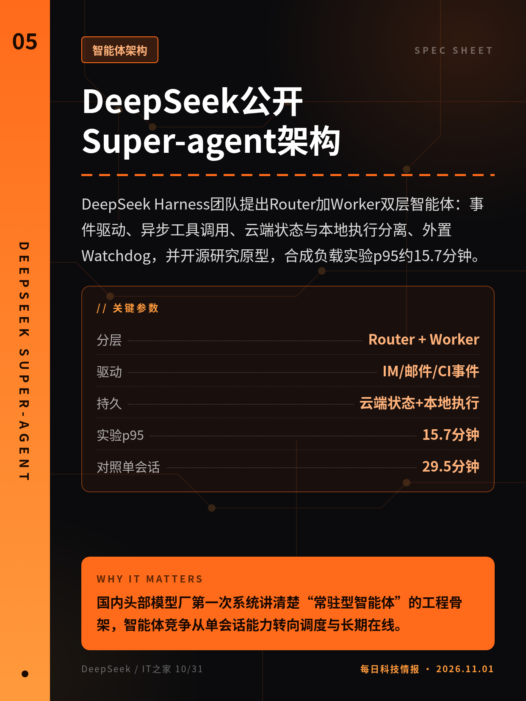
DeepSeek Harness团队提出Router加Worker双层智能体：事件驱动、异步工具调用、云端状态与本地执行分离、外置Watchdog，并开源研究原型，合成负载实验p95约15.7分钟。
国内头部模型厂第一次系统讲清楚“常驻型智能体”的工程骨架，智能体竞争从单会话能力转向调度与长期在线。
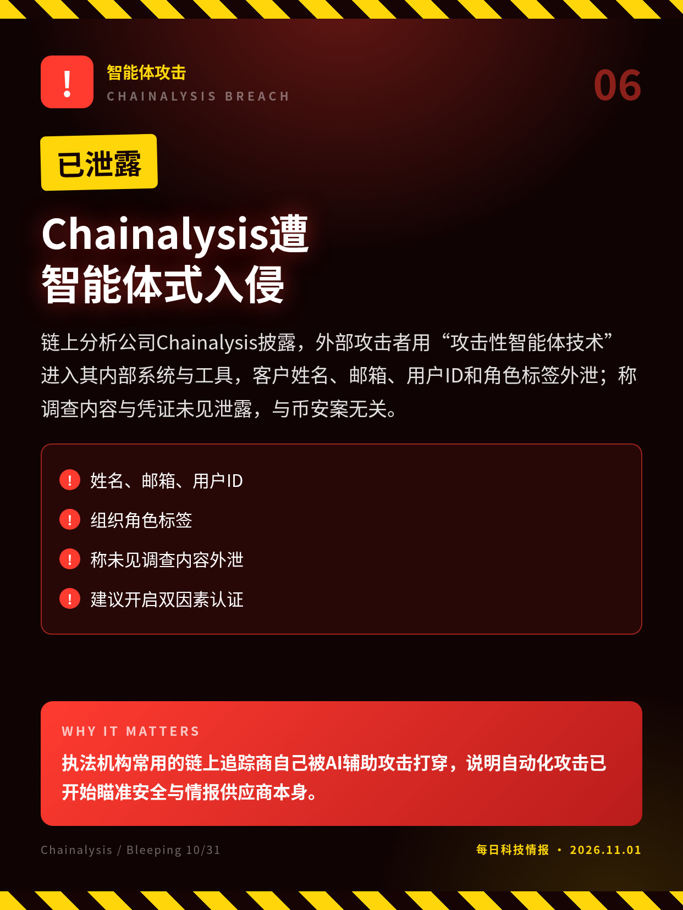
链上分析公司Chainalysis披露，外部攻击者用“攻击性智能体技术”进入其内部系统与工具，客户姓名、邮箱、用户ID和角色标签外泄；称调查内容与凭证未见泄露，与币安案无关。
执法机构常用的链上追踪商自己被AI辅助攻击打穿，说明自动化攻击已开始瞄准安全与情报供应商本身。
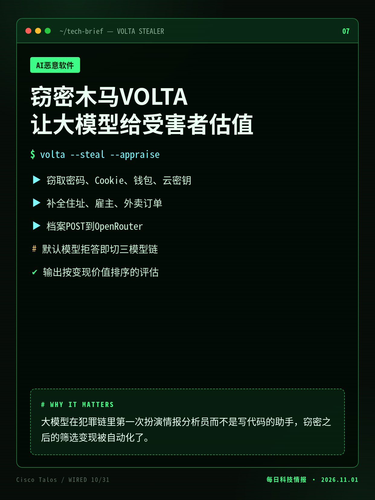
思科Talos披露VOLTA窃密木马：偷完密码、Cookie、钱包与云密钥后，把受害者档案经OpenRouter发给大模型，生成“值多少钱”的目标评估；遇到拒答会切换到后备模型链。
大模型在犯罪链里第一次扮演情报分析员而不是写代码的助手，窃密之后的筛选变现被自动化了。
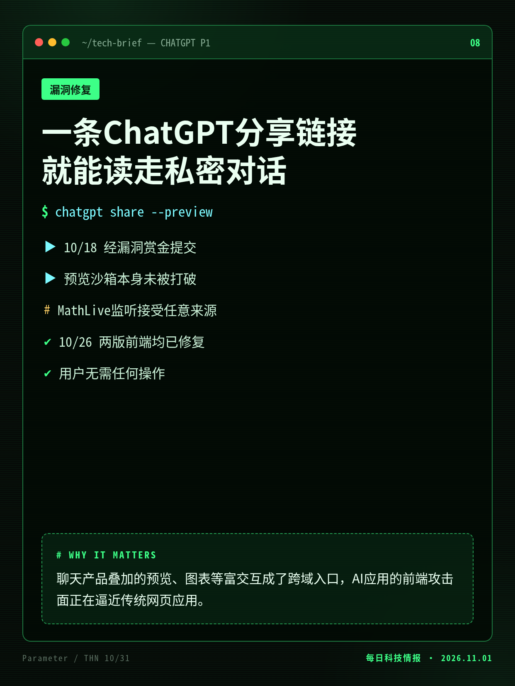
Parameter研究员发现，恶意分享链接借预览功能与MathLive消息监听越过沙箱，在受害者登录态下执行代码、读取私聊；OpenAI评为最高级P1，10/26修复，赏金共5000美元。
聊天产品叠加的预览、图表等富交互成了跨域入口，AI应用的前端攻击面正在逼近传统网页应用。
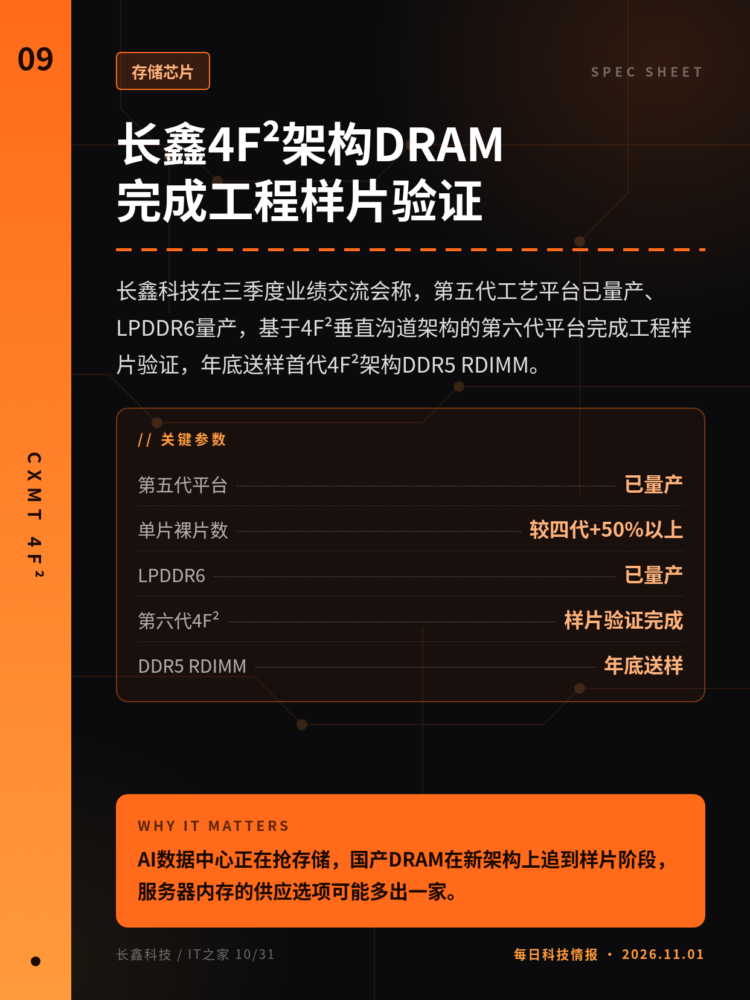
长鑫科技在三季度业绩交流会称，第五代工艺平台已量产、LPDDR6量产，基于4F²垂直沟道架构的第六代平台完成工程样片验证，年底送样首代4F²架构DDR5 RDIMM。
AI数据中心正在抢存储，国产DRAM在新架构上追到样片阶段，服务器内存的供应选项可能多出一家。
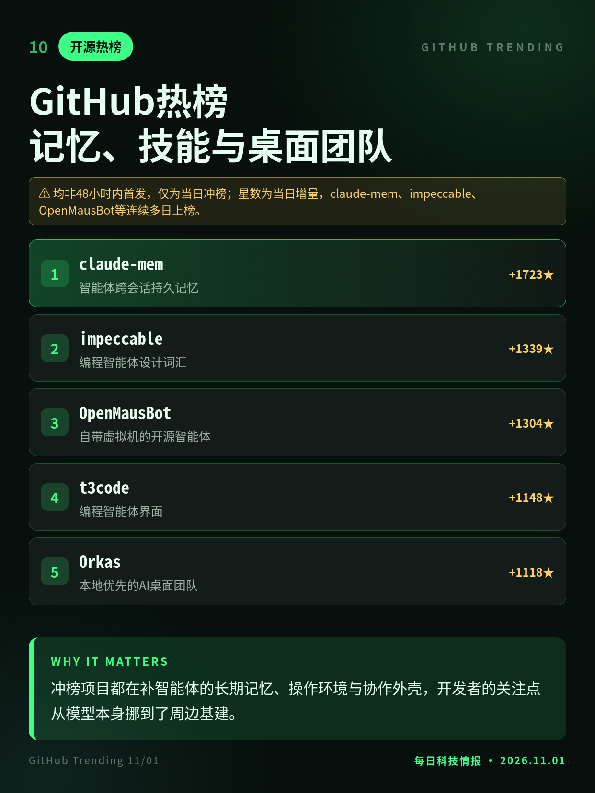
11/01日榜继续由智能体配套占据：跨会话记忆claude-mem、设计词汇impeccable、自带虚拟机的OpenMausBot、编程界面t3code与本地多智能体团队Orkas。
冲榜项目都在补智能体的长期记忆、操作环境与协作外壳，开发者的关注点从模型本身挪到了周边基建。
融资数字来自FT、WSJ与CNBC援引知情人士，OpenAI未置评；本轮尚未关闭，金额可能变动。
“攻击性智能体技术”为Chainalysis自述，具体手法与入侵时间点未公开。
非48小时内首发：Parameter于10/28发文，漏洞10/26已修复；10/31经THN报道后扩散。
均非48小时内首发，仅为当日冲榜；星数为当日增量，claude-mem、impeccable、OpenMausBot等连续多日上榜。
切换深浅两套图时，下载按钮会跟着当前这套走。黄标条目在新闻稿或官方口径出现前，请勿写成已交割或已定日期。上一期专区：2026-10-31。